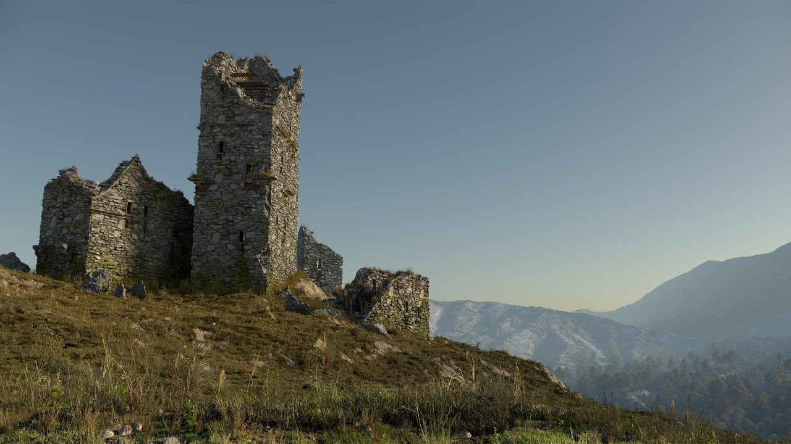

Houdiniを用いたモデリングからシェーディング、スキャッタリング、レンダリングまで、背景（環境）制作の一連のワークフローを体系的に学べるGnomon Workshopの実践コース。廃墟となった古城が丘の上に佇む環境ショットを題材に、プロシージャルなアプローチで一貫して制作していく構成になっている。
URL
https://www.thegnomonworkshop.com/workshops/creating-procedural-environments-in-houdini
YouTube